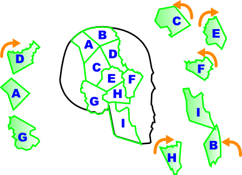
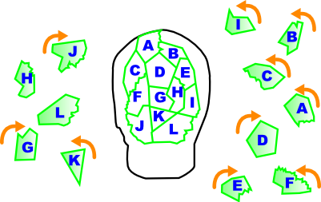
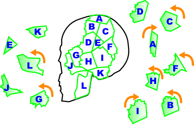
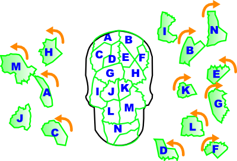

共通ルート: 感染者・ゼロPatient Zero
- 現在書きかけにつき、記述内容やデータが正しくない場合があります。
- 2そして死は始まる/So Begins Death
-
Infomation
- 初期傷病者数 1
- 総傷病者数 5
- LIMIT 1
このステージでは傷病者の処置が完了しても搬送されない。四人目と五人目を最後まで処置完了させることでイベントが発生してステージクリアとなる。
Patients
一人目：白
バイタル60以上でイベント発生。二人目追加。
二人目：赤
バイタル60以上でTALK可能。TALK後三人目～五人目追加。
三人目：赤
四人目：赤
- 胸部：ガラス片 x 3
- はさみ
- 胸部：血溜まり x 2、裂傷 x 3
- はさみ
- 左腕：止血、血溜まり x 4、裂傷 x 1
- はさみ
- 右腕：止血、血溜まり x 3、裂傷 x 1
- 輸血
五人目：赤
- はさみ
- 右腕：裂傷 x 2
- 左腕：骨折
- 右足：骨折
Special Bonus
条件 Intern Resident Specialist MISS判定@回以下 6 3 1 COOL判定@回以上 8 10 12 痙攣の発生合計@回以内 14 12 10 バイタルを@以下にしない 6 10 12 Operation Rank
ランク Intern Resident Specialist C ～7699 ～8199 ～8399 B 7700～8599 8200～9099 8400～9399 A 8800～9499 9100～9999 9400～9999 S 9500～ 10000～ 10000～10499 XS - - 10500～ XS Time Limit
GOODの数 クリアタイム 0 2分20秒 XS Guide
一人目～三人目は基本的に何もできない。クリア条件を満たすために四人目と五人目を集中的に処置する形になるが、バイタルを12以下にしてはいけないので、状況を見てバイタル回復の為に切り替える必要がある。
トリアージタグが赤になっている状態がバイタル残量11～23になるが、複数人この状態になってしまうと回復が間に合わなくなるので、タグの黄色が取れ欠けている状態（24～32）になったら回復の為に切り替えよう。
それ以外はとくに要求される条件は無い。痙攣10回以内もXSを目指せば自然と満たすので、特に難しいステージでは無いだろう。
XS Talk
ハンク「何と素晴らしい処置だ！ウデを上げたな、マリア…」
マリア「ヘッ、下らない事言ってんじゃねぇよ。アタシだって成長してんだからな！」Movie

- 3誇り高き者/Proud One
-
PHASE1
視診
- 指先
- 〈指先の腫れ〉
- 左腕
- 〈腕部のむくみ〉
- 左目
- 〈瞼の下垂〉
問診
- 2番目「自分は、数日前より胸に痛み…」
- 〈胸痛〉
- 3番目「自分は、血液の混じった…」
- 〈血痰〉
- 4番目「自分は、左腕に痺れを…」
- 〈腕部の痺れ〉
画像検査：X-RAY
- 左鎖骨
- 〈肺の腫瘍影〉
診断
パンコースト腫瘍に全ての症状を当てはめる
診断
イベントが発生してX-RAY解禁
画像検査：X-RAY
- 2枚目の左肺
- 〈悪性腫瘍細胞陽性〉
診断
パンコースト腫瘍に残りの症状を当てはめる
PHASE2
問診
- 2番目「先程から、腹が痛み出して…」
- 〈腹痛〉
視診
- 右目
- 黄疸
分析検査
- 総ビリルビン
- AST
- ALT
- γ-GTP
- LAP
- PIVKA-II
- AFP
診断
肝臓悪性腫瘍に全ての症状を当てはめる
画像検査：CT
- 1～4枚目 中央の白い臓器
- 〈肝臓の腫れ〉
- 4枚目 中断左端にある薄い影
- シンチグラフィ解禁
メダル
3枚目の上部の白い部分を選択
画像検査：シンチグラフィ
- 爪のような黒い影
- 〈肝臓の異常集積像〉
診断
「肝臓悪性腫瘍」に残りの候補を当てはめる。
PHASE3
問診
- 6番目「筋肉痛が酷くて…」
- 〈筋肉痛〉
- 9番目「どうも文字は苦手で…」
- 〈頭痛〉
- 12番目「最近、栄養バランスが…」
- 〈貧血〉
- 14番目「先程までは快適…」
- 〈発熱〉
視診
- 腹部の痣
- 〈皮膚の色素斑〉
- 目
- 〈目の充血〉
診断スペース
- 急性出血結膜炎に以下を当てはめる
- 眼の充血
- 発熱
- 頭痛
- 腸チフスに以下を当てはめる
- 皮膚の色素班
- 発熱
- 頭痛
- 重症急性呼吸器症候群
- 発熱
- 筋肉痛
- 頭痛
- マラリア
- 眼の充血
- 発熱
- 頭痛
- 筋肉痛
- 細菌性赤痢
- 発熱
視診
- 口元
- 〈吐血〉
- 腹部の痣
- 〈皮膚出血〉
分析検査
- 血圧
- 白血球数
- フィブリノゲン
- APTT
- 血小板
診断スペース
ウィルス性出血熱に全ての症状を当てはめる
問診
- 4番目「私は…きっと…」
- 9番目「それが…私の、…」
〈抗体反応陽性〉
診断
ウィルス性出血熱に症状を当てはめる
- 4奪われた記憶と恐怖/Stolen Memories
-
Special Bonus
条件 Intern Resident Specialist MISS判定@回以下 10 6 1 病巣の復元@回以内 7 4 2 流れた異物片によるダメージ@回以内 35 25 10 病巣と異物片の衝突@回以内 12 8 2 Operation Rank
ランク Intern Resident Specialist C ～5849 ～7399 ～8549 B 5850～6149 7400～7699 8550～9049 A 6150～6449 7700～7999 9050～9549 S 6450～ 8000～ 9550～9649 XS - - 9650～ XS Time Limit
GOODの数 クリアタイム 0 2分10秒 病巣はドレーン→血清→血清→メス→摘出といった手順を踏む必要があり、処置に時間がかかる。異物片もメスで切り出した後にドレーンで血だまりと異物片を吸い上げなければならない。
病巣に異物片がぶつかるとバイタル最大値とバイタルを減らした上に血清を投与していても処置段階がふりだしからになってしまう。
だが、逆に言えばそれだけな上、2回までならぶつかっても良いので、短時間で終わらせる為には敢えてスルーすることも重要。
そして異物片は10回まで流れきってもいいので、どんどん無視して構わない。
注意したいのは流れが逆になったあと。病巣のすぐそばに出現する場合があるので、血管の端には注意しておいて、黒い影が見えたらすかさずエコー→メスができるようにしたい。
XS Talk
マリア「クソッ、何がどうなってんだ！おい、しっかりしろっ…！」
マリア「…それにしてもこの野郎、何て根性してんだよ…」Movie

- 5感染拡大/Spreading Infection
-
Special Bonus
条件 Intern Resident Specialist MISS回数@回以下 15 8 2 ドリルの処置でMISSの回数@回以下 19 10 6 COOL判定@回以上取得 50 75 90 マレットを振った回数@回以下 10 7 5 Operation Rank
ランク Intern Resident Specialist C ～20999 ～25174 ～34549 B 21000～23399 25175～27874 34550～35049 A 23400～25799 27875～30574 35050～35549 S 25800～ 30575～ 35550～35699 XS - - 35700～ XS Time Limit
GOODの数 クリアタイム 0 14分20秒 1 13分50秒 2 13分20秒 3 12分50秒 4 12分20秒 5 11分50秒 6 11分20秒 XS Guide
非常に長いステージだが、その分スコアに余裕がある。骨削り処置やドリルを手早く終わらせて、11分程度でクリアできれば、GOODの数が4～5個でもXSが出るだろう。
骨削り
ヌンチャクの傾きで掘る角度を調整して、リモコンの振りで削る。リモコンを振る強さで削れる量が異なる。角度が合っていれば削るのに何回要してもCOOL判定となる。
問題は最初の一発目で、急ぐ余りに力を込めてリモコンを振ると、左手のヌンチャクの傾きが変わってしまってミスになることがある。
そこで、最初の一発目はリモコンを小さく振って打ち込む。無事にのみが入ったら、後はフルパワーで削りまくろう。
XS Talk
ミラ「ザッツ・クール！ 完璧なオペだったわ」
ハンク「お…そ、そうか。私は、ただ…」
ミラ「フフフ、良い病院ね。…昔を思い出すわ」Movie


- 6クロエの病変/Chloe's Change
-
Special Bonus
条件 Intern Resident Specialist COOL判定@回以上 9 12 15 壁に@回以上当たらない 4 3 2 血溜まりの発生@回以内 30 30 30 バイタル注射の使用@回以内 25 25 25 Operation Rank
ランク Intern Resident Specialist C ～6799 ～7599 ～8399 B 6800～8399 7600～8899 8400～9399 A 8400～9299 8900～9599 9400～9899 S 9300～ 9600～ 9900～10199 XS - - 10200～ XS Time Limit
GOODの数 クリアタイム 0 8分20秒 1 7分50秒 2 7分20秒 3 6分50秒 4 6分20秒 XS Talk
ミラ「…ザッツ・アメイジング。ここにも、神の手を持つ者が居たなんで」
トモエ「神の手…？それはどういう意味でしょうか？」
ミラ「フ…天才とは、往々にして自覚を欠く物なのかしらね…」Movie

- 7死と悪魔/Demons and Death
-
検査室：頭蓋骨を復元
STAGE 1/4

STAGE 2/4

STAGE 3/4

STAGE 4/4

- 復元終了
- 頭蓋骨（欠損アリ）
検査室：遺留品
- 胸の血痕
- [2] 破損が無い
- 着衣に残る血痕
- 膨らんだ胸ポケット
- 謎の鍵
- 膨らんだポケット
- 携帯用シリンジケース
PC
x x @ x x x謎の鍵
x x @ x x携帯用シリンジケース
x x x x @- 着衣に残る血痕
- 一致したDNA
x @ x @ x- 謎の人骨片
 頭蓋骨（欠損アリ）
頭蓋骨（欠損アリ） - 頭蓋骨に当て嵌める
- 病原の眠る骨
- 骨の窒素含有量
- 病原の眠る骨
- [2] 出血熱に感染して居た
- [3] 致死性のウィルス
- [1] 空気感染は有り得ない
- [2] 骨片の下にあった
- [3] 粘膜感染
- 見えない感染経路
一致したDNA
検査室：遺体
- 左ひざの紫の箇所
- 傷ついた関節
- 右脚のバラバラになった箇所
- [2] 最も硬い骨
- 大腿骨の骨折
- 右腕の変色した箇所
- 右腕部の傷跡
PC
x x x @ x x x x- 大腿骨の骨折
- 低下した骨密度
x x x @ x x x x- 右腕部の傷跡
- [4] サンプル採取の為
- サンプル採取痕
x x x x x x @ x- 傷付いた関節
- 半月板が欠損して居た
- 失われた半月板
x x x x x x @ @- 失われた半月板 低下した骨密度
- 骨格の弱体化
- 衰弱した骨格
- 抗ウィルス薬群
- 衰弱した骨格 抗ウィルス薬群
- [3] カルシウムの異常消費
- [2] 骨密度の低下
- [1] 自分自身に対して
- [2] 大腿骨の骨折
- [1] 半月板の欠損
- 危険な投与の痕跡
x x @ x @ x- 見えない感染経路 サンプル採取痕
- [2] 粘膜
- [1] 骨を削る
- [3] 骨の粉末を吸引した
- 粉末による感染
x x @ x @- 危険な投与の痕跡 粉末による感染
- [3] この人物はウィルスに感染して居た
- 死因は出血熱？
- DNAの分析結果
- [2] 吐血
- 吐血の痕
- 吐血の痕 死因は出血熱？
- [4] 衣服を着替えて居ない事
- 確定した死因？
- [3] 医療従事者
- 遺体は医療従事者
- 性別の判定
- 年齢の推定
- 人種の推定
- 死後経過時間の算出
x x x x @ x x @- 骨の窒素含有量 死後経過時間の算出
- [2] 死後約2年
- 約2年前の死体
検査室：遺体
- 骨盤
- 骨盤の形状
- 眼窩
- 三角形の眼窩
- 頭頂部
- 破線状の縫合線
PC
x | x x x @ x | x @ x x- 人種の推定 三角形の眼窩
- [1] コーカシア
- コーカシアの白骨体
x | x @ x x x | x x @- 年齢の推定 破線状の縫合線
- [3] 推定50代
- 推定50代
x x x x x @ @ x- 性別の判定 骨盤の形状
- [1] 男性
- 男性の白骨体
解明
- 約2年前の死体
- 男性の白骨体
- 推定50代
- コーカシアの白骨体
- 遺体は医療従事者
- 確定した死因
- 死者の声
- 8少女の行方/Missing Girl
-
Infomation
- 初期傷病者数 5
- 総傷病者数 15
- LIMIT 4
ロザリア患者は、他の患部を全て処置した上でロザリア痣が安定していれば処置完了となる。また、ロザリア患者は一定時間経過で痙攣を起こしてバイタルを19減らす。
Patients
一人目：首にロザリア痣（赤）
- 抗ウイルス剤 x 3
二人目：白
- 胸部：血溜まり x 2、裂傷 x 2
- カウンターショック
- 気道確保
三人目：赤、左腕にロザリア痣（黄）
- 抗ウイルス剤
- 腹部：ガラス片 x 3
四人目：青、左腕にロザリア痣（赤）
- 抗ウイルス剤
- 血溜まり x 3
五人目：赤
- 右腕：骨折
六人目：緑、首にロザリア痣（青）
2人搬送すると追加。
- 抗ウイルス剤
- カウンターショック
七人目：紫、首にロザリア痣（青）
2人搬送すると追加。
初期状態でTALK可能。TALK後11人目追加。
- 抗ウイルス剤
- 首：裂傷 x 2
八人目：緑
3人搬送すると追加。
- 腹部：ガラス片 x 3
- はさみ
- ロザリア痣（黄）
- 腹部：血溜まり x 1、裂傷 x 2
九人目：赤
7人目TALKで追加。
- 胸部：熱傷 x 3
- 一定時間後にカウンターショック
十人目：黄
5人搬送すると追加。
- 腹部：熱傷 x 2
十一人目：赤
5人搬送すると追加。
- 腹部：熱傷 x 3
十二人目：緑
傷病者数残り1人になると追加。
- ロザリア痣（赤）
- はさみ
- 裂傷 x 3
- 輸血
十三人目：緑
傷病者数残り1人になると追加。
- はさみ
- ロザリア痣（黄）
- 腹部：血溜まり x 3、裂傷 x 1
- 輸血
十四人目：緑
傷病者数残り1人になると追加。
- ロザリア痣（黄）
- 腹部：熱傷 x 3
- 心臓マッサージ
- 気道確保
十五人目：赤
傷病者数残り1人になると追加。
- ロザリア痣（青）
- 胸部叩打
- 気道確保
Special Bonus
条件 Intern Resident Specialist MISS判定@回以下 9 5 3 全ての患者を搬送する - - - 抗ウイルス剤の投与を間違えない - - - 痙攣の発生合計@回以内 20 10 5 Operation Rank
ランク Intern Resident Specialist C 11999 ～12499 ～12999 B 12000～12999 12500～13499 13000～13999 A 13000～13999 13500～14499 14000～14999 S 14000～ 14500～ 15000～15499 XS - - 15500～ XS Time Limit
GOODの数 クリアタイム 0 5分40秒 1 5分10秒 2 4分40秒 3 4分10秒 4 3分40秒 XS Guide
処置人数が15人と最多なだけでなく、患者毎に抗ウイルス剤の色を記憶しなければならない。
色の記憶方法としては、一人目以外で首に痣があったら青色でよい。後は黄色と赤を覚えよう。
15人と非常に多いが、実際は少し処置しただけで搬送される者が結構いるので、回復に切り替える前に、今の患者がすぐ終わるかどうか見極めれば時間の短縮に繋がる。
XS Talk
CR-S01「…流石だ。完璧な対応だった」
マリア「ヘッ、アタシはヒーロー目指してんだ。お前には負けてらんねぇからな！」Movie

- 9仲間/Friends
-
Special Bonus
条件 Intern Resident Specialist MISS回数@回以下 13 8 4 処置の中断@回以内 10 6 2 軟性コロニーの千切れた回数@回以下 4 3 2 血管の再癒着@回以下 8 6 4 Operation Rank
ランク Intern Resident Specialist C ～9524 ～11599 ～14699 B 9525～10349 11600～12499 14700～15199 A 10350～11174 12500～13399 15200～15699 S 11175～ 13400～ 15700～15849 XS - - 15850～ XS Time Limit
GOODの数 クリアタイム 0 5分30秒 1 5分00秒 XS Talk
ゲイブ「…あ～、何だ。前から言おうとは思ってたんだが」
ハンク「……？どうした、何か問題か？」
ゲイブ「いや、そうじゃねぇ。その…有り難うな、ハンク」Movie

- 10蒼き死の床で/Blue Carpet of Death
-
検視用ブルーシート：遺体
- 左足の裏
- [3] 出血後に歩いた
- 左足の切創
- 右太ももの赤い穴（前）
- [2] 射出口
- 大腿部の射出口
- 胸の赤い穴
- [1] 射入口
- 胸部の射入口
- 右太ももの赤い穴（裏）
- [1] 射入口
- 大腿部裏側の射入口
- 右手の掌
- [3] 銃
- 右掌の射創
- 右掌の黒い粒子
- 背中の紫に変色した箇所
- 残された死斑
- 背中の赤い穴
- [2] 射出口
- 背部の射出口
検視用ブルーシート：遺留品
- 胸の周囲に散った血
- [2] 周囲に散って居る
- 胸部に散った血痕
現場検証：研究施設
- ドアガラスの割れた箇所
- 割れたドアガラス
- 入り口に散乱するガラスの破片
- 血痕の付着するガラス片
- 入り口付近の床にある黄色い物体
- 入口付近の薬莢
- 床の血痕
- 床に残る血痕
- 机の近くに落ちている黄色い物体
- 机下の薬莢
- 正面棚の側に落ちている機械
- 壊れたヴォイスICレコーダ
PC
x x x x | x x x @ x x x x | @ x x x- 背部の射出口 胸部の射入口
- [2] 正面から撃たれた
- 正面からの貫通射創
x x x x | @ x x x x x x x | @ x x- 大腿部の射出口 大腿部裏側の射入口
- 背後から撃たれた
- 背後からの貫通射創
x x x | x x x @ x x x | x x x x- 正面からの貫通射創
- 胸部の致命傷
x x x | x x x x x x x | x x x @背後からの貫通射創
x x x | x @ x x x x x | x x x x- 右掌の射創
- [3] 身を守ろうとした
- 右掌の防御創
x x x | x x @ x x x x | x x x @- 右掌の防御創 胸部に散った血痕
- [4] 右掌からの出血
- 銃弾の軌跡
x x x | x @ x x x x x | x x x- 右掌の黒い粒子
- [1] 至近距離から撃たれた
- 至近距離からの発砲
- 推理
- [2] 胸部の貫通射創
- [1] 正面
- [2] 掌の防御創
- [4] 火薬痕
- [2] 至近距離から撃たれた時
- 正面からの殺意
x x | x x @ x x x | x x x- 残された死斑
- [4] 遺体は動かされて居ない
- [3] 犯人が遺体を運んだ
- 蒼き死の床へ
x x | x @ x x x x | x x x- 壊れたヴォイスICレコーダ
- ICレコーダへ証言追加
x | x x x x x | x @ x x- 机下の薬莢
- @机下の9ミリ弾
x | x @ x x x | x x x x床に残る血痕
x | x x x x x | @ x x x血痕の付着するガラス片
x | x x x x @ | x x x x割れたドアガラス
x | @ x x x x | x x x x- 入口付近の薬莢
- 入口付近の9ミリ弾
- [1] 発泡した位置
- 入口付近での発砲
- 机付近での発砲
ICレコーダ
- DATA A -普通に聞く-
- 最後のボイスを再生
- アルベールの血痕
現場検証：花畑
- 青い花を虫眼鏡で調べる
- 花に眠る薬莢
ヘリの中
- 調査報告が届く
- 内側から割れたガラス
PC
x x | x x @ x x x | x x xアルベールの血痕
x x | x x x x x x | x x @- 花に眠る薬莢
- 3発目の薬莢
x x | x x x x x x | x @ @- 内側から割れたガラス 机付近での発砲
- 2発
- [3] 入り口のドアガラス
- [2] 机付近
- ガラスを撃ち抜いた一撃
x | x @ x @ x | x x x x- 3発目の薬莢 正面からの殺意
- [3] この場所で発砲があった
- [1] ロザリアはここで殺された
- 花畑に響く銃声
- PCから抜ける
- ロザリアの血痕
PC
x | x x x @ @ | x x x- ロザリアの血痕 左足の切創
- [3] ロザリアはガラス片を踏んだ
- ガラスによる切創
x x x x x x @ @- ガラスによる切創 ガラスを打ち抜いた一撃
- [2] 研究室内にいた
- [3] 銃撃から逃げて居る
- [4] ロザリア
- [1] 3発
- [3] この場で使用された弾数
- 入り口での顛末
- アルベールの銃
- 分析結果報告
- [2] 射撃距離の違い
- 遠距離からの射撃
x @ x x x x x @- 入口付近での発砲 遠距離からの射撃
- [3] 花畑の中央
- [1] 研究室の扉付近
- 入り口から撃たれた脚
- PCを抜ける
- [3] 全部で3発
- [2] 蒼い花畑
- [4] 地面に倒れて居た
現場検証：花畑
- 青い花の部分
- 死の弾丸
PC
x x x x x x x @- 死の弾丸
- 一致した線条痕
x x x x x x @ @- 一致した線条痕 アルベールの銃
- [2] ロザリアを殺したのはアルベール
- アルベールの凶弾
PCから抜けるとICレコーダに証言が追加
ICレコーダ
- DATA 2 -普通に聞く-
- 最後のボイスを再生
- [1] 吐血の痕
- 吐血の痕
- ICレコーダに証言が追加
- DATA 3 -普通に聞く-
- 最後のボイスを再生
- [3] 抗体
- 神の血を持つ少女
PC
x x x x @ x x x- 蒼き死の床へ
- [2] 犯人が遺体を動かした
- [4] 地面に残された銃弾
- [1] 掌の防御創
現場検証：花畑
- 青い花の部
- 蒼い花畑
PC
x | x x x @ x | x x x- 蒼い花畑
- 蒼いアスクレピアス
x | x x x @ x | x x @- 神の血を持つ少女 蒼いアスクレピアス
- 花が変色した
- [3] ロザリアの血液
- 変色した花
x x x x @ x x @- 蒼き死の床へ 変色した花
- [3] ロザリアの血液
- 咲き誇る蒼い死
- [1] モナーク
- 死を呼ぶ黄金の翼
- PCから抜ける
- ICレコーダに証言が追加
ICレコーダ
- DATA 4 -普通に聞く-
- 最後のボイスを再生
真相解明
- アルベールの凶弾
- 入り口での顛末
- 入り口から撃たれた脚
- 花畑に響く銃声
- 吐血の痕
- 咲き誇る蒼い死
- 死を呼ぶ黄金の翼
- 死者の声
- 11絶望/Despair
-
Special Bonus
条件 Intern Resident Specialist ガイドゲートを@ヵ所以上開かない 33 28 22 巨大コロニーへの薬剤注入@回以内 35 20 15 巨大コロニーにドレーンを使用しない - - - ウイルスコロニーの爆発回数@回以内 3 2 0 Operation Rank
ランク Intern Resident Specialist C ～6699 ～7699 ～8699 B 6700～8499 7700～9099 8700～9699 A 8500～9599 9100～9899 9700～10199 S 9600～ 9900～ 10200～10499 XS - - 10500～ XS Time Limit
GOODの数 クリアタイム 0 9分20秒 1 8分50秒 2 8分20秒 3 7分50秒 4 7分20秒 XS Talk
CR-S01「クソ、間に合わない…！バイタルを維持するのがやっとだ！」
トモエ「いいえ、間に合わせます！私達で…救うんですっ！」
CR-S01「クッ…そうだな、そうだっ！俺たちは、負ける訳には行かないっ！」Movie

- 12歓喜の刻/Time For Rejoicing
-
Special Bonus
条件 Intern Resident Specialist COOL判定@回以上 2 3 4 抗体血清の使用@回以内 15 13 10 ロザリア痣に生まれる患部を再発生させない - - - 血溜まりの発生@回以内 10 10 10 Operation Rank
ランク Intern Resident Specialist C ～5349 ～5549 ～5749 B 5350～6349 5550～6549 5750～6749 A 6350～7049 6550～7149 6750～7249 S 7050～ 7150～ 7250～7549 XS - - 7550～ XS Time Limit
GOODの数 クリアタイム 0 3分10秒 1 2分40秒 for XS
ロザリア痣からは一定時間毎に患部が再発生する。発生してしまうとボーナスを逃してしまうので、かなり急がなければならない。
次に、全ての患部を処置するとロザリア痣へ抗体血清を投与できるようになるが、投与時にバイタルを大幅に減らしてしまう為、事前にバイタルを回復する必要がある。
しかし、痣への投与が可能になってから回復していては間に合わないので、
抗体血清を5回投与すれば手術終了となるが、5回全てでCOOL判定を出さなければならい。
XS Talk
CR-S01「…信じられない。こんなオペが…出来るなんて…」
マリア「…私も、同じです。厳しい戦いでしたね」
CR-S01「あ…いえ、違います。俺は、貴方の手技の事を言ったんです」Movie

- 13ロザリア変異腫/Twisted Rosalia
-
Special Bonus
条件 Intern Resident Specialist MISS判定@回以下 10 7 1 コロニー外殻の復元@回以内 30 16 4 増殖コロニーと腫瘍片の衝突@回以内 12 8 0 コロニー片による痣の発生@回以内 10 8 2 Operation Rank
ランク Intern Resident Specialist C ～5474 ～8599 ～11249 B 5475～5999 8300～8899 11250～11749 A 6000～6524 8900～9499 11750～12249 S 6525～ 9500～ 12250～12399 XS - - 12400～ XS Time Limit
GOODの数 クリアタイム 0 6分00秒 1 5分30秒 for XS
コロニーは最初にドレーンで吸いきってから60秒後に復活する。例え切除していても復活するので、その間に外殻を破壊して血清を撃ち込まなければいけない。
右心室からコロニーの数が3個になる。コロニーの注射の判定は意外と広く、2個まとめて注射を打つことも可能だ。しかしここに罠があり、青い注射をコロニーに打っているときに、青い注射が終わっているコロニーの判定が重なると、例え注射中でもミス扱いになってしまう。
対策としては、基本的に同時注射は狙わないようにしよう。また、右側のコロニーから処置するようにすれば重なる機会は減るはずだ。
XS Talk
マリア「何か…まだ信じらんねぇ…本当に、救えちまったんだよな…？」
CR-S01「…心配無い。病魔は完全に沈黙した」
マリア「は…はは、何て奴だ…本当に…奇跡を起こしちまいやがった」Movie

- » ドクター・メダル